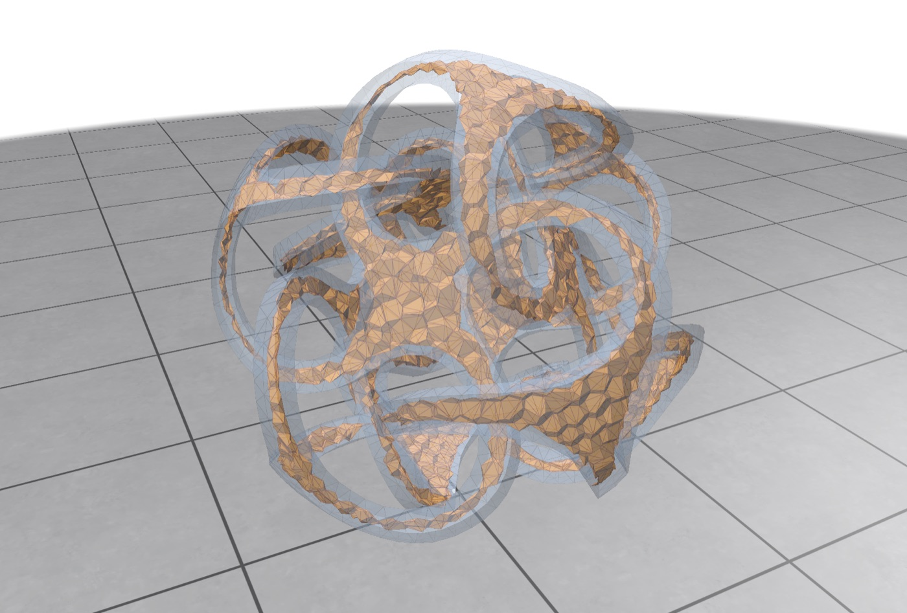

Approximating the 3D Medial Axis
Overview
The medial axis of a solid is the set of centers of maximal balls that fit inside it. In 3D it is not a single surface but a stratified complex of sheets that meet along seams and junction curves. It is a compact skeleton of the shape, useful for shape analysis, simplification, and animation.
medial-axis-3D is a C++17 tool that extracts an approximate medial-axis sheet complex from a closed triangle mesh and lets you explore it interactively. Following the Voronoi-pole idea behind the Power Crust, it samples the surface, builds a 3D Delaunay tetrahedralization of the samples, and keeps the interior part of the Voronoi dual that is supported by inward poles.

Pipeline
- Validate and sample the surface. Check that the mesh is closed, two-manifold, and consistently oriented, then add deterministic uniform or adaptive samples while keeping every original vertex.
- Build the Delaunay/Voronoi structure. Construct a 3D Delaunay tetrahedralization with exact adaptive
orient3dandinspherepredicates. Each tetrahedron's circumcenter is a Voronoi vertex, and circumcenters outside the solid are discarded using the mesh's winding number. - Build candidate Voronoi polygons. Each Delaunay edge has a dual Voronoi polygon. Polygon edges and fan diagonals are tested against the surface, so a chord can't leave and re-enter a concave solid unnoticed.
- Find inward poles and medial balls. For each surface sample, select an inward Voronoi pole, validate its radius and surface contacts, and propagate its support to nearby polygons.
- Select complete sheet strata. Keep or reject whole Voronoi polygons, restore rejected patches that are enclosed by kept sheets, and complete each sheet across ordinary edges, stopping at seams so one sheet can't flood into another.
- Classify the topology. Group boundary edges into loops and label them as real sheet terminations, boundaries at seams and junctions, or unresolved artificial boundaries. Edges shared by three or more polygons are reported as medial seams.
Key Design Decisions
Results
Reference run on the Fertility model, a high-genus, strongly concave benchmark mesh, at base resolution with default settings:
The 40/80/160-sample stability runs report scores between 0.25 and 1, and the confidence and stability diagnostics remove zero triangles by default. This completed-sheet result is the closest match I found to the sheet layout reported by MATTopo.
What I Tried
| Approach | Outcome on Fertility |
|---|---|
| 90° contact angle as a hard cutoff | Only 4,307 polygons, split into 1,689 sheet pieces, with valid tapering regions cut out |
| 35° continuation + 90° strong evidence + sheet completion (default) | 11,602 polygons and 30,146 triangles; the closest match to MATTopo's sheet layout |
| Keep every surface-clipped face of the full Voronoi diagram | Filled more space but added many near-surface radial sheets (rejected) |
| Clip faces by a local contact-angle disk | Denser and visually less medial (rejected) |
The main lesson: filling in every missing geometric candidate is not the same as recovering the medial axis. More geometry often made the result less medial.
Limitations and Next Steps
The pipeline starts from an unconstrained Delaunay tetrahedralization and then tests its dual against the surface. On simple or nearly convex shapes, dual polygons tend to be wholly inside or outside, so the result is clean. On concave, high-genus models like Fertility, some polygons straddle the surface and have to be dropped whole, which leaves a few gaps that the bounded repair pass can't safely fill. Closing them properly needs a constrained interior tetrahedralization, a clipped restricted Voronoi diagram, or a MATTopo-style medial-sphere and power-diagram construction.
Engineering
- An interactive Polyscope viewer with diagnostic layers for medial balls, contact spokes, seams, junctions, local feature size, sampling density, and more.
- An optional CUDA backend for the expensive inside/outside and surface-intersection queries.
- A regression test suite covering Delaunay construction, pole validation, non-convex containment, atomic dual-face retention, and gap handling.
- Headless runs with per-stage profiling, plus Python tools for converting OFF meshes and running sampling-convergence experiments.
Running It
cmake -S . -B build -DCMAKE_BUILD_TYPE=Release
cmake --build build --parallel
./build/polyscope_viewer ./examples/dented_cube.node --samples 160Credits
- Jonathan Shewchuk's robust geometric predicates
- Amenta, Choi & Kolluri, The Power Crust, Unions of Balls, and the Medial Axis Transform
- Dey & Zhao, Approximate Medial Axis as a Voronoi Subcomplex
- MATTopo, topology-preserving medial axis transform via restricted power diagrams